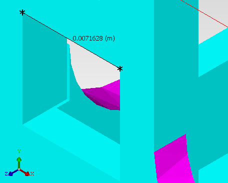

Distances between
two vertices of the ACIS geometry can be shown in the GDA.
Procedure
- Select the
relevant MCAD Body and click the Measure icon or choose to
open the Measure dialog box.
The mouse pointer changes to
cross-hairs.
- Select the first vertex by
clicking near a vertex. A yellow cross-hair icon appears when you
are close enough to select the vertex.
- Select the second vertex.
Results
After the second selection, the distance
is calculated and displayed in the window (see Figure 1) and the Measure dialog box.
Figure 1. Measured Distance